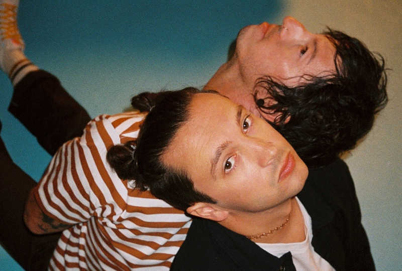

Para mais entendemento, sugido em 2009 em Columbus, Ohio, Twenty One Pilots é um dos duos mais ecléticos da musica atual, uma mistura unica de hip-hop, rock, indie e musica eletrônica e um plus de letras conceituadas e poéticas, as musicas feitas por Tyler Joseph(cantor) e Josh Dun(baterista) merecem o sucesso que hoje estão fazendo atualmente. Eles lançaram dois álbuns independentes, o autointitulado Twenty One Pilots, em 2009, e Regional at Best, em 2011. Seu primeiro álbum com a gravadora Fueled by Ramen, Vessel, foi lançado em 2013. O duo alcançou um grande sucesso com o álbum seguinte, Blurryface, lançado em 2015. O quinto álbum de estúdio do duo, Trench, foi lançado em 5 de outubro de 2018.
Tudo começou em maio deste ano(2021), depois de mais de 13 meses sem o noticias de novos singles, foi então anunciado "Shy Away", para a surpresa de todos os ouvintes da banda, 3 dias depois ja saira a nova musica. O videoclipe foi lançado simultaneamente single deixando fãs animados para essa era nova e diferenciada.
Scaled and Icy o novo álbum de Twenty One Pilots, inicia uma nova era para o duo estadunidense, seguindo a narrativa dos outros dois albuns-conceito(Blurryface e Trench) sua continuação . O álbum foi lançado em 21 de maio de 2021 junto a uma livestream experience que bateu recordes inimagináveis. Com uma nova identidade visual e mudanças no estilo musical, o álbum traz um toque mais nostálgico e colorido, diferente do antecessor Trench, com músicas diversificadas e mais felizes.
O álbum conta com um total de 11 músicas, alegres, mas com letras realmente importantes sobre depressão e suicídio, especificamente o último single “Redecorate”.
Confira o site oficial de Twenty One Pilots: twentyonepilots.com